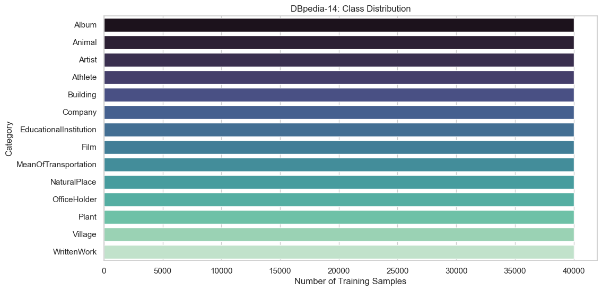
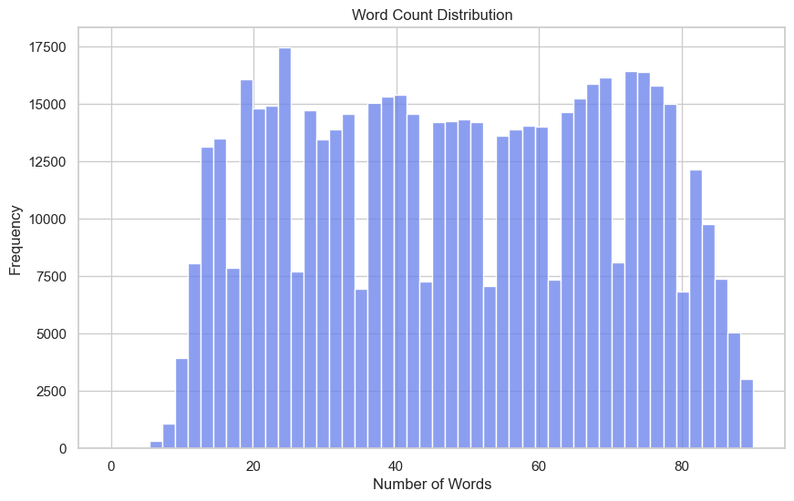
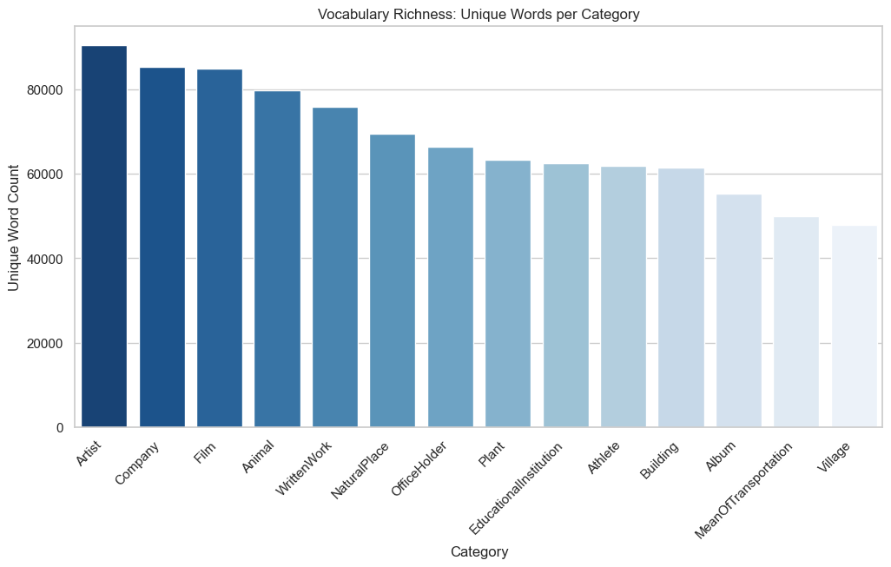
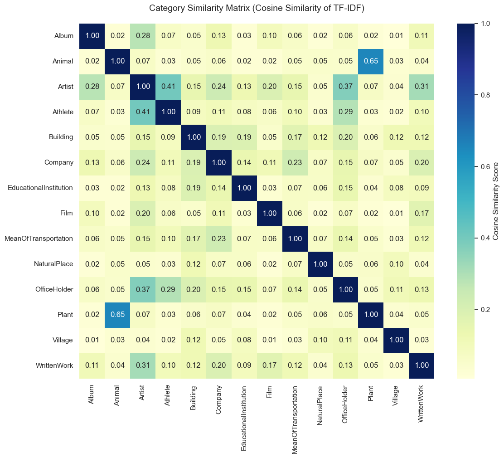
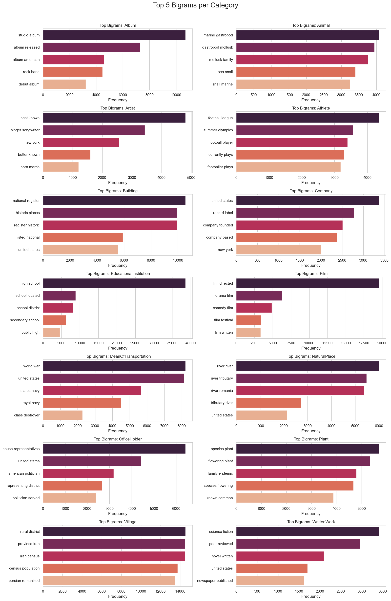
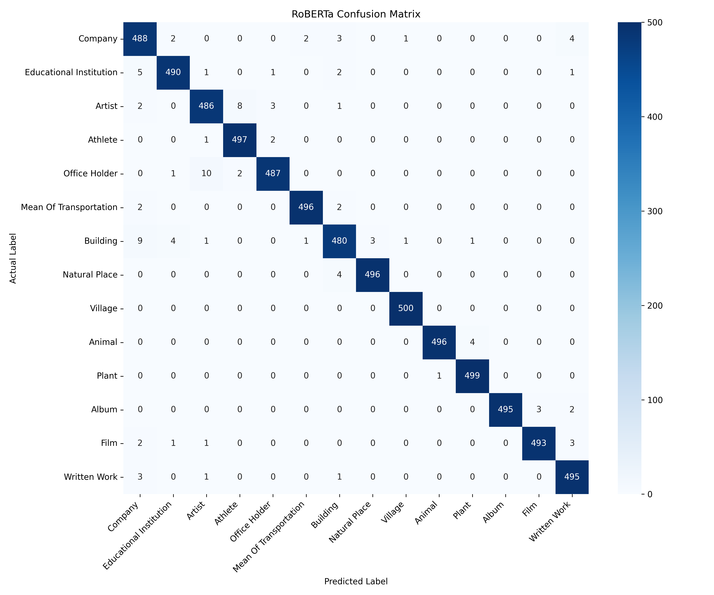
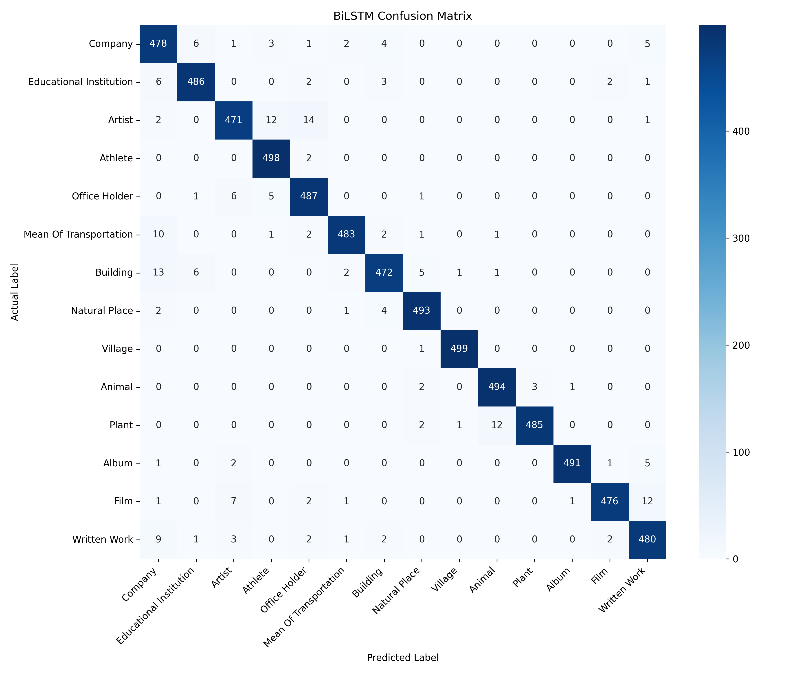
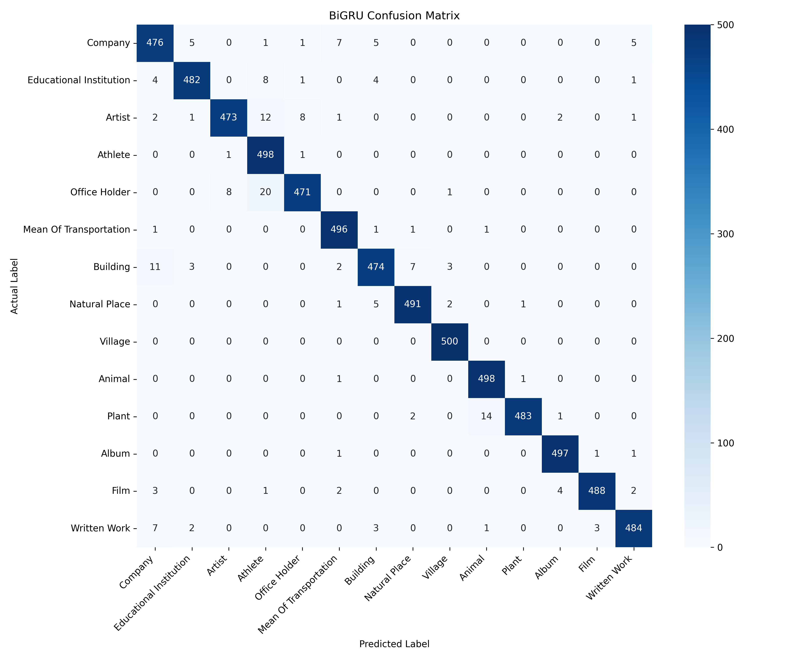

Source: Hugging Face - DBpedia 14
The DBpedia-14 dataset is a large-scale text classification benchmark comprising 14 non-overlapping classes that cover a broad spectrum of Wikipedia entities. While the full dataset contains 560,000 training and 70,000 testing samples, we utilize a highly controlled, stratified subset of 28,000 samples for training and 7,000 samples for testing. This ensures uniform class representation while optimizing computational efficiency for multiple model runs.
Company, EducationalInstitution, Artist, Athlete, OfficeHolder, MeanOfTransportation, Building, NaturalPlace, Village, Animal, Plant, Album, Film, WrittenWork.
To understand the complexity of DBpedia-14, we conducted a comprehensive lexical and structural analysis, assessing label distribution, sequence complexity, and class separability boundaries.
Observation 1 - Uniformity: The DBpedia-14 dataset is perfectly uniform. This establishes a highly stable baseline for comparing different neural network architectures without needing class weights.
Observation 2 - Optimal Sequence Length: The Word Count Distribution demonstrates that the vast majority of introductory paragraphs heavily concentrate between 10 and 80 words. This insight allows us to set an efficient `max_length=100` that captures complete semantic context without incurring unnecessary padding and computational overhead.

Figure 1: Uniform Class Distribution.

Figure 2: Text Word Count Distribution.
To understand the linguistic features our models will learn, we conducted a lexical analysis of the dataset focusing on vocabulary diversity, distinctive terms, and meaningful phrase boundaries.

Figure 3: Vocabulary Richness across classes.
Lexical Boundaries: The Category Similarity Matrix mapping (via cosine similarity of TF-IDF vectors) reveals that the most prominent linguistic overlaps occur within clearly related topical domains, most notably between biological categories (Animal and Plant at 0.65 correlation) and biographical/entertainment categories (Athlete and Artist at 0.41).

Figure 4: Category Similarity Matrix.

Figure 5: Top 5 Bigrams per category.
| Category | Sample Extracts |
|---|---|
| Company |
|
| Educational Institution |
|
| Artist |
|
| Athlete |
|
| Office Holder |
|
| Mean Of Transportation |
|
| Building |
|
| Natural Place |
|
| Village |
|
| Animal |
|
| Plant |
|
| Album |
|
| Film |
|
| Written Work |
|
Two distinct categories of neural network architectures were implemented to establish a comprehensive baseline: Recurrent Neural Networks (BiLSTM/BiGRU) utilizing GloVe embeddings, and fine-tuned Transformer models (DistilBERT/RoBERTa).
Sequence texts are parsed and truncated/padded to exactly
max_length=100 tokens to ensure fast batches
without compromising semantic meaning.
For recurrent networks, a 100-dimensional GloVe continuous embedding matrix is instantiated. It maps vocabulary tokens to dense vectors before sequence ingestion.
Utilizing Hugging Face's
AutoModelForSequenceClassification.
BiLSTM and BiGRU implementations using PyTorch, customized for the 14-class sequence task.
AdamW optimizer is used with distinct learning rates:
1e-3 for recurrent networks and
2e-5 for fine-tuning transformers.
Table 1 showcases the comprehensive performance metrics extracted during the training of the models, displaying predictive power against computational constraints.
| Model | Accuracy | Macro F1 | Inference Time (s) | Inf. Memory (MB) | Learnable Params |
|---|---|---|---|---|---|
| DistilBERT | 98.71% | 0.9871 | 14.28 | 474.66 | 66,964,238 |
| RoBERTa | 98.54% | 0.9854 | 13.81 | 533.50 | 82,129,166 |
| BiLSTM | 97.04% | 0.9704 | 1.11 | 172.23 | 9,875,418 |
| BiGRU | 97.30% | 0.9729 | 0.99 | 189.97 | 9,816,538 |
DistilBERT achieved the highest absolute performance (98.71%), but the BiGRU represents a highly efficient baseline. It processes inference batches over 14x faster than the transformer models while maintaining a highly respectable 97.30% accuracy with fewer than 10M parameters.
RNNs exhibit slightly more false positives between linguistically similar classes (e.g., Plant vs. Animal), likely due to the lack of deep contextual self-attention across longer dependencies.
Figure: DistilBERT Matrix

Figure: RoBERTa Matrix

Figure: BiLSTM Matrix

Figure: BiGRU Matrix
An analysis of misclassified "hard examples" reveals distinct behavioral differences between how transformers and recurrent networks parse complex contextual text.
"Mamunur Rashid (Bengali: মামুনুর রশীদ; born 29 February 1948) is one of the pioneering theatre activists in Bangladesh. He is the chief secretary of leading theatre group Aranyak (theatre group) which plays crucial roles in creating common people aware about their rights through his plays..."
Actual Label: Artist
| DistilBERT | Artist |
| RoBERTa | Artist |
| BiLSTM | Athlete |
| BiGRU | OfficeHolder |
Discussion: The text contains overlapping contextual clues. Transformers correctly synthesized "theatre" and "plays" across the full sequence. The RNNs frequently failed here, likely over-indexing on localized structural words in their dense embedding space.
"Atâ-Malek Juvayni (1226–1283)... was a Persian historian who wrote an account of the Mongol Empire... Both his grandfather and his father Baha al-Din had held the post of sahib-divan or Minister of Finance for Muhammad Jalal al-Din and Ögedei Khan respectively."
Actual Label: Office Holder
| DistilBERT | OfficeHolder |
| RoBERTa | Artist |
| BiLSTM | Artist |
| BiGRU | Artist |
Discussion: This text features words related to writing ("historian", "wrote an account"). Only DistilBERT's attention mechanism accurately weighed the concluding sentences regarding "Minister of Finance" to resolve the long-range dependency.
Attention-based models like DistilBERT provide absolute peak accuracy by dynamically mapping contextual meaning across lengthy text passages, successfully mitigating local keyword bias.
Despite the dominance of transformers, classic RNNs (especially BiGRU) proved to be highly formidable production candidates where extreme sub-second latency and minimal VRAM requirements outweigh ~1% drops in F1 score.